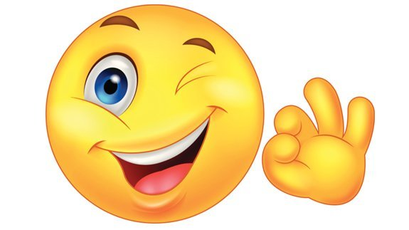

The world is now suffering
from corona virus
Let us always pray for our health.

The sunshine is so bright
It gives hope to everyone

It’s a small
World after all

Always wear a smile,
you might inspire somebody
with it.
“Beginning today, I will create a new future by creating a new me.
No longer will I dwell in a pit of despair,
moaning over squandered time and lost opportunity.
I can do nothing about the past. My future is immediate.
I will grasp it in both hands and carry it with running
feet.
When I am faced with the choice of doing nothing or
doing something,
I will always choose to act! I seize this
moment.
I choose now.” ~
Andy Andrews
v
TLE 9